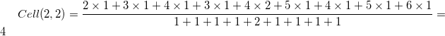

× のフィルタ行列をとり、元の行列の各セルにフィルタを適用します。フィルタの各セルに対して、元の行列を重ねてフィルタ要素の積を計算し、すべての積を合計し、(指定すれば)フィルタの重みを規格化して、重み付けした平均で元の画像のピクセルを置き換えます。
× のフィルタ行列をとり、元の行列の各セルにフィルタを適用します。フィルタの各セルに対して、元の行列を重ねてフィルタ要素の積を計算し、すべての積を合計し、(指定すれば)フィルタの重みを規格化して、重み付けした平均で元の画像のピクセルを置き換えます。filter2 Xファンクションは、元の行列に正方形のフィルタを適用します。フィルタ行列は、元の行列の各セルの中央にフィルタを配置します。
この機能を使用するには、
| 再計算 |
分析結果の再計算を制御します。
詳細は、以下をご覧下さい。分析結果の再計算 |
|---|---|
| 入力行列 |
入力行列オブジェクト 範囲制御についてはこちらを確認してください：入力データを指定する |
| フィルタ行列 |
フィルタ行列オブジェクト |
| パディングオプション |
ソース行列の端では、行列フィルタは境界を外てしまう可能性があります。パディングオプションを選択します。
|
| 規格化 |
チェックをつけるとフィルタの重みで置き換えた値を規格化します。 |
| 出力行列 |
出力行列オブジェクトの指定 範囲制御についてはこちらを確認してください：結果の出力 |
この機能は、 × のフィルタ行列をとり、元の行列の各セルにフィルタを適用します。フィルタの各セルに対して、元の行列を重ねてフィルタ要素の積を計算し、すべての積を合計し、(指定すれば)フィルタの重みを規格化して、重み付けした平均で元の画像のピクセルを置き換えます。
例えば、

出力行列でcell(2,2) の値は次のようになります。

Normalize チェックボックスのチェックを付けると、重ね合わせたセルの積は、フィルタの対応するセルの重みで正規化されます。
ソース行列の端にフィルタを適用すると、境界より外側にフィルタの一部がかかってしまう可能性があります。このような場合、ソース行列の外側を0で埋めたり(ゼロパティング)、内側のセル値を反射させたり(マッピング)、端の値を繰り返す(繰り返しパディング)ことで値を割り当てることができます。